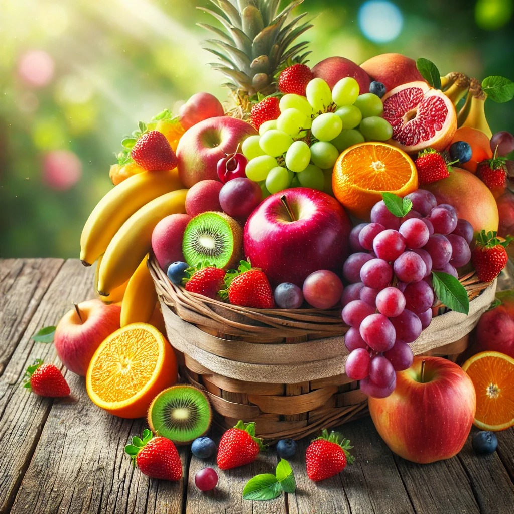

Pourquoi manger des fruits ?
Les fruits sont une source naturelle de vitamines et de plaisir. Explorez notre site pour en savoir plus !

Découvrez la richesse et la diversité des fruits !
Les fruits sont une source naturelle de vitamines et de plaisir. Explorez notre site pour en savoir plus !
